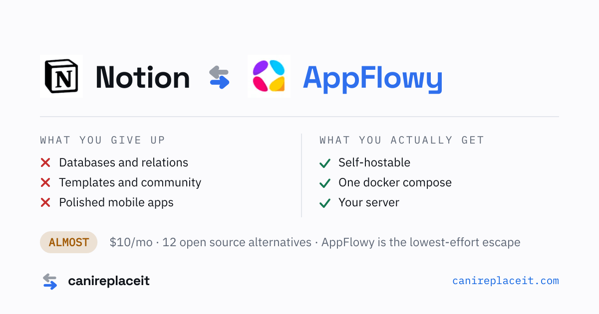
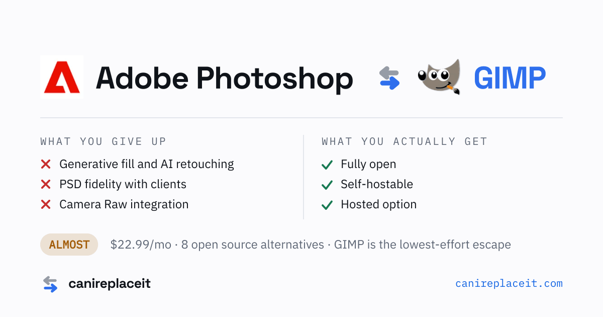
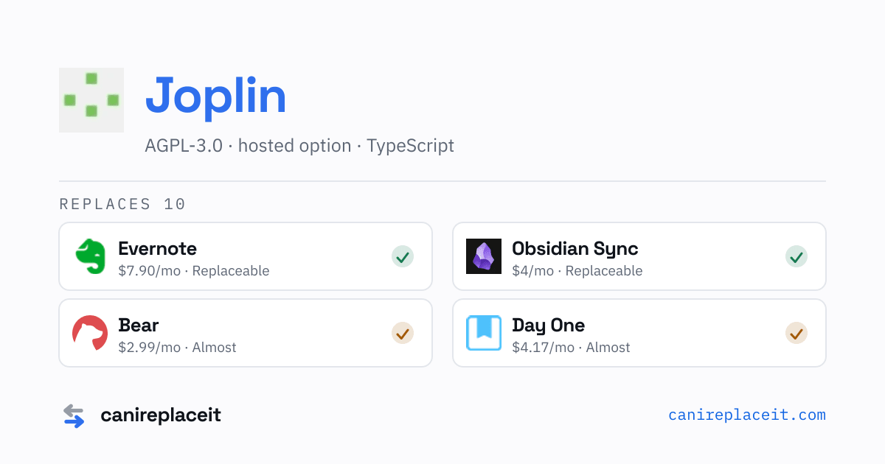
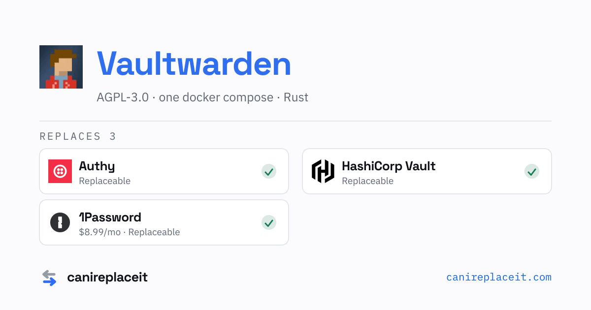
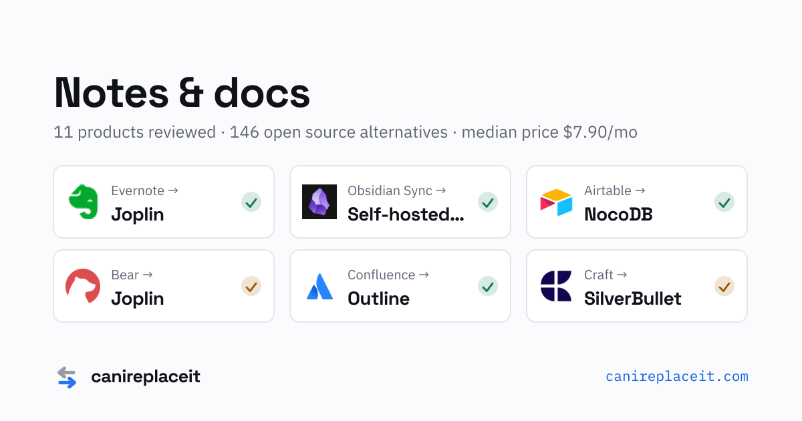
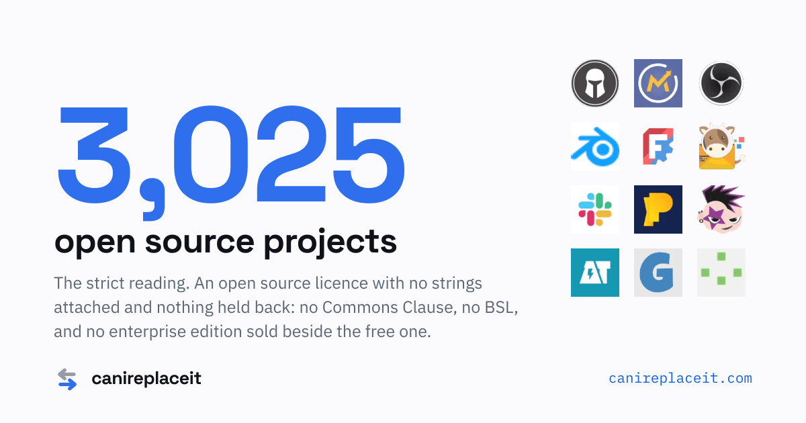
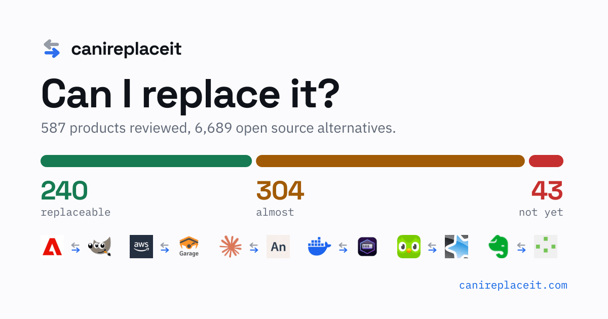
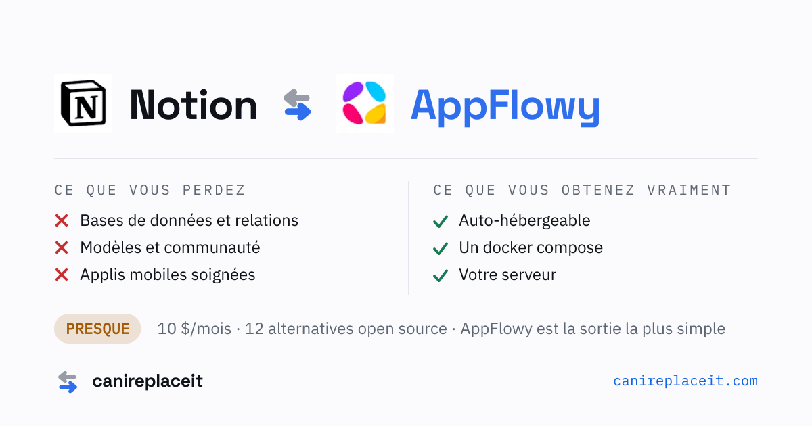
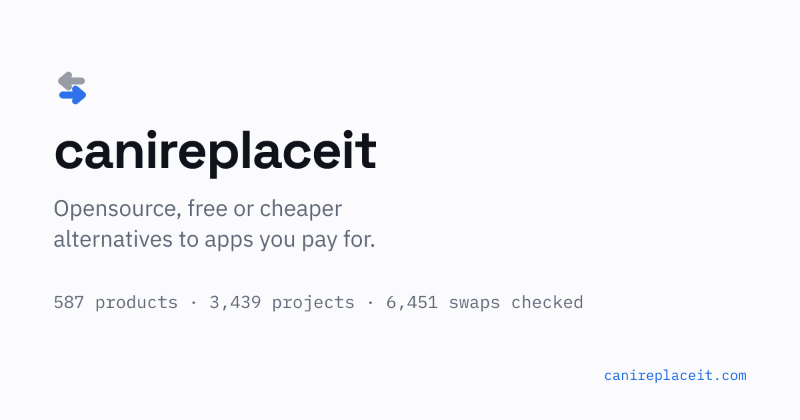

Generated by scripts/build-og-pages.ts. Every card is exactly 1200×630. 4,025 PNGs
total, 82.6 MB, mean 21 KB, largest 44.1 KB — three orders of magnitude under every platform cap.
The 2,602 project cards are new; before this pass those pages all shared the generic card below.

/en/alternatives/notion
29 KB · 1200×630
og:image:alt Notion versus AppFlowy. Verdict almost, $10/mo, 12 open source alternatives, AppFlowy is the lowest-effort escape.
/en/alternatives/adobe-photoshop
29 KB · 1200×630
og:image:alt Adobe Photoshop versus GIMP. Verdict almost, $22.99/mo, 8 open source alternatives, GIMP is the lowest-effort escape.
/en/tools/joplin
19 KB · 1200×630
og:image:alt Joplin replaces Evernote, Obsidian Sync, Bear, Day One. AGPL-3.0, hosted option, TypeScript.
/en/tools/vaultwarden
18 KB · 1200×630
og:image:alt Vaultwarden replaces Authy, HashiCorp Vault, 1Password. AGPL-3.0, one docker compose, Rust.
/en/categories/notes-docs
25 KB · 1200×630
og:image:alt Notes & docs. 11 products reviewed, 146 open source alternatives, median price $7.90/mo. Evernote versus Joplin, Obsidian Sync versus Self-hosted LiveSync, Airtable versus NocoDB, Bear versus Joplin, Confluence versus Outline, Craft versus SilverBullet.
/en/collections/foss
43 KB · 1200×630
og:image:alt 3,056 open source projects. FOSS. The strict reading. An open source licence with no strings attached and nothing held back: no Commons Clause, no BSL, and no enterprise edition sold beside the free one. The build you run yourself is the whole product.
/en/
27 KB · 1200×630
og:image:alt (falls back to the page title)
/fr/alternatives/notion
30 KB · 1200×630
og:image:alt Notion contre AppFlowy. Verdict presque, 10 $/mois, 12 alternatives open source, AppFlowy est la sortie la plus simple.All new except og.png and favicon.svg. The site previously had no
raster favicon at all, which Google's own docs never promise to render.
/logo-512.png512×512 — Organization.logo/favicon-96x96.png96×96 — SERP favicon/apple-touch-icon.png180×180 — opaque, iOS composites onto black/icon-192.png192×192 — manifest/icon-512.png512×512 — manifest
/og.png1200×630 — the generic fallback card